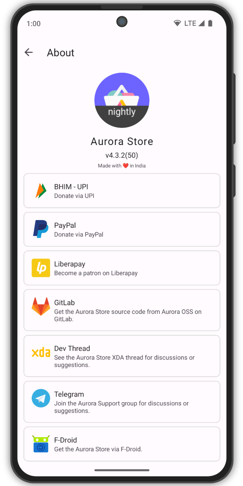

Aurora Store 用了一年，这些坑我替你踩过了
从更新不同步到搜不到应用，从安装器选型到跨渠道升级，Aurora Store 看着简单好用，实际藏着好几个容易踩的坑。本文把常见问题和应对办法整理成一篇过来人实录，帮你少走弯路。
开头：它好用，但真有坑
我第一次接触 Aurora Store 是因为 Google Play 在国内的半残状态——搜索卡顿、加载慢、时不时跳验证，体验实在折磨。当时去AuroraStore官网逛了一圈，发现它作为开源替代方案，不用装全套 GApps、匿名模式直接用、界面清爽干净，当时就觉得这就是我要找的东西。
但用了不到一周就开始踩坑。先是更新检测和 Play Store 对不上，后来搜几个常用应用显示"此应用不可用"，再往后更离谱——从 AuroraOSS 官网下了更新包覆盖安装直接报"签名不一致"。这些问题单独拎出来看好像都不大，但凑在一起就让人怀疑是不是自己装了个假商店。
其实 Aurora Store 的坑大多不是 bug，而是它的工作方式和 Google Play 本身的机制差异导致的。下面我把这一年里踩过的五个典型坑逐个拆开说——症状是什么、为什么会这样、怎么救或者怎么提前避开。
坑一：Aurora 显示有更新，Play Store 却没有
症状：打开 Aurora Store 的 Updates tab，看到好几个应用标着"有新版本"，但切到 Play Store 一看，全部显示"已是最新版本"。最开始我以为 Play Store 抽风了，清空缓存、重启手机，还是对不上。
原因：这个坑跟 Aurora Store 关系不大，是 Google 自己的问题。Google Play 对新版本采用分批 roll-out 机制——新版本先推给 10% 用户观察，没大问题再扩到 50%，最后全量。关键在于 Aurora Store 的匿名模式：它用的是 token dispenser 分配的伪 Google 账号，这些伪账号可能恰好落在第一批 10% 的池子，也可能落在最后一批。所以 Aurora 那边"看到了"更新，但你真实的 Play Store 账号还在等轮到它。
解法：最简单的办法就是等——通常两三天两边就同步了。如果你嫌等得烦，另一个路子是切到真实 Google 账号登录 Aurora Store，这样它用的就是你账号在 Play Store 的真实推送节奏，两边就不会打架了。不过我一般懒得切，等两天就好。
坑二：搜不到应用，或者显示"此应用不可用"
症状：输入应用名搜索，结果里完全没有；或者搜到了但点进去显示一条红底提示——"此应用在您的设备不可用"或"此应用在您的国家/地区不可用"。这个坑我踩得最多，尤其是一些日系游戏和设备专属应用。
原因和解法得拆开说，因为搜不到应用的原因不止一种：
第一种是 Play Asset Delivery 问题。Google Play 新版大文件分发机制，APK 本身很小（不到 10MB），但运行时从服务器拉几百 MB 的资源包。Aurora Store 目前不支持这套机制，遇到 PAD 应用要么搜不到，要么下了装不上。怎么判断？看应用描述里写了"需要额外下载 XX MB 数据"基本就是了。解法很直接——换 APK 镜像站，APKMirror 最稳，找全量包下。
第二种是设备锁。应用限定了设备型号，比如某些三星独占、Pixel 独占的东西。解法是试 Device Spoofing——侧栏 Spoof manager 里选一个知名 Google 设备（Pixel 系列最通用），确认架构匹配，刷新搜索页。
第三种是地区锁。应用只在特定国家/地区上架，比如不少日本游戏。解法是 Locale Spoofing——Language 里选目标地区（JP、US、DE 之类），如果是匿名模式还得重新随机一个同地区的伪账号，不然地区不匹配还是搜不到。
还有别忘了付费应用的情况——Aurora Store 不能直接购买，免费匿名账号下搜得到但没 INSTALL 按钮，这时候用你自己已付费的 Google 账号登录 Aurora 就能下了。
我有个小习惯：每次搜不到应用先扫一眼 APK 大小，判断是不是 PAD，这一步能省不少时间。然后按 Device → Locale → 换账号的顺序试，通常到第二步就能解决。
坑三：批量更新弹一堆确认框，或者静默安装死活不工作
症状：点 Aurora Store 的"全部更新"，结果每个应用都单独弹一个确认安装的系统对话框——二十个应用弹二十次，手都点酸了。或者你配好了 Shizuku / Device Owner，以为能静默安装，结果还是弹框、或者报权限错误。
原因：这其实是安装器选型的问题。Aurora Store 内置五种安装器，每种的能力和配置门槛差别很大：
- Session Installer：零配置默认选项，兼容性最好、安全性最高，唯一缺点就是每个应用都弹确认框。
- Shizuku Installer：有 root 或愿意用 ADB 的话是首选，支持静默安装和伪装 Play Store 来源，体验最接近 Play Store 原生更新。但 Shizuku 本身需要启动——root 设备自动起，无 root 的每次重启后得用电脑 ADB 拉起来。
- Device Owner + Session：GrapheneOS 用户专属，其他设备别折腾 provisioning，权限极大搞不好变砖。
- microG Installer：不是给所有 microG 用户用的，只有遇到应用因来源问题行为异常时才切过去试一下，日常还是 Session 好。
- Root Installer：功能比 Shizuku 弱，除非你真的不想装 Shizuku App 又有 root。
解法：90% 的情况直接用 Session 就行，弹几次框真没那么麻烦。你要是有 root、又想省那点事，装个 Shizuku 配一下，静默安装配合伪装来源，体验一下就回不去了。但别为了"高级"硬上 Device Owner——我之前在一台非 GrapheneOS 设备上试过，折腾了一下午最后还是卸载了。
坑四：跨渠道升级，覆盖安装直接报签名不一致
症状：从 AuroraOSS 官网下了更新包，打算覆盖安装——系统弹窗："应用签名不一致，请先卸载旧版本"。我第一次遇到时以为下错包了，删了重下还是一样。
原因：这个坑是我最没想到的——我后来查AuroraStore文档才搞清楚，不同渠道的 Aurora Store 签名不一样。AuroraOSS 官网和 GitLab Releases 用 Aurora OSS 社区自己的签名，F-Droid 和 IzzyOnDroid 各自有独立的签名私钥。APK 签名是 Android 的安全机制，签名不同就不是同一个应用，系统拒绝覆盖安装。
解法：最稳的办法是永远从同一个渠道更新——比如一开始从 AuroraOSS 官网装的，以后就只用 Aurora Store 内部自更功能（About 页面会校验新旧版本签名一致性），别去 F-Droid 切。如果真的想换渠道，那就先卸载旧版再装新版——注意备份数据，卸载会清掉 Aurora Store 的登录状态和下载记录。
坑五：随便下一个 Aurora Store APK，验都不验就装了
症状：这条不是我踩的，但在社区里见过不少。公共 WiFi 下随便搜了个"Aurora Store 最新版"下过来装，而不是老老实实去AuroraStore下载拿官方包，结果用了一周发现后台偷跑数据，或者应用列表里莫名多了几个"推荐应用"。
原因：Aurora Store 是开源软件，代码在 GitLab 公开，任何人都可以编译。恶意开发者可以注入跟踪代码或后门，重新打包成同名 APK。公共 WiFi 中间人攻击、下载站被劫持、搜索引擎把镜像站排在前面——这些场景下你拿到的可能就不是 Aurora OSS 社区签名的原版。
解法：最可靠的办法是验证书指纹。Aurora Store 的 About 页面直接显示签名指纹，和官网公布的 SHA-256 对比一下就行。或者如果你已经有一个官方版的 Aurora Store，就用它自更新——Aurora 内部更新时会自动校验签名，不一致直接拒绝安装。别嫌麻烦，验一次 10 秒钟，省得后续出事。

防坑清单：五条速查
- 更新检测和 Play Store 对不上是 Google 分批推送机制，等几天就好，嫌慢切真实 Google 账号
- 搜不到应用先判断是不是 Play Asset Delivery（APK <10MB 且描述要额外下载），是就换 APK 镜像站
- 90% 用户直接用 Session Installer；有 root 想省力气就配 Shizuku，别乱碰 Device Owner
- 永远从同一个渠道更新 Aurora Store，换渠道必须先卸载，卸载前记得备份
- 装新版本之前花 10 秒验一下证书指纹，别让假包混进来
Aurora Store 的完整资料（含安装包、文档、FAQ）我在GitHub、Gitee和GitCode上各同步了一份，开源项目嘛，多几个仓库总不至于一份挂了就没处找。如果你之后换手机或者换地区，直接去那边翻就行，内容跟 AuroraOSS 社区那边保持一致。